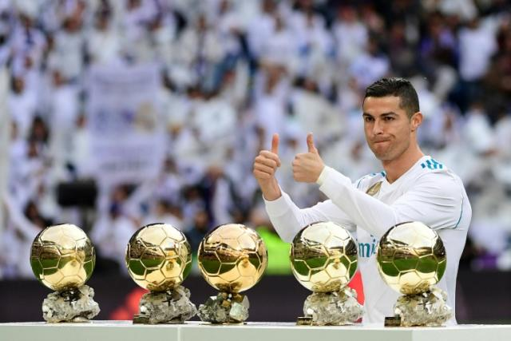

Cristiano Ronaldo aslo known as Cristiano Ronaldo dos Santos Aveiro is one of of not the best football(soccer) players of all time, he was born on February 5th, 1985. He was born in the potuguese capital island Madeira, he grew in a nearby town of Santo Antonio. Cristiano Ronaldo was not a good student in fact he got expelled for throwing a chair at his teacher in 1999 because his teacher made jokes about his poor family. He started his carrer as a football(soccer) player at Sporting Lisbon, and since then he has scored a total of 923 goals in his carrer, he has played for the legendary club Real Madrid, Manchester United and Juventus. He was won a total of 33 career trophies including 5 champions leagues and one his most impressive achievements is that he has won 5 Ballon d'Ors.
